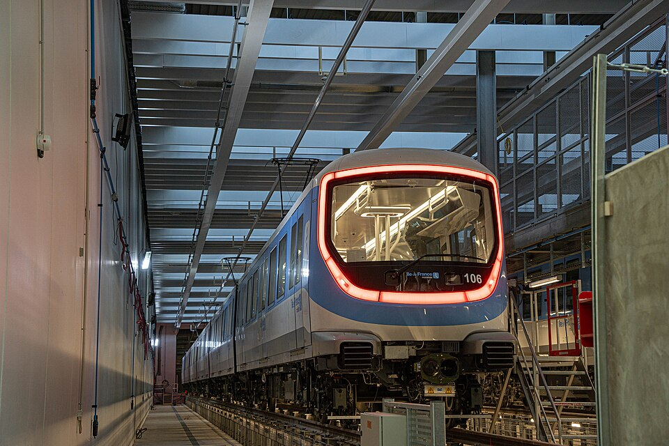

La ligne 15 du métro de Paris est une ligne en construction du réseau métropolitain de Paris.
Longue de 75 km et devant desservir 36 stations, elle constitue l'élément central du projet global du
Grand Paris Express. Conçue sous forme d'une ligne ferrée souterraine de capacité équivalente, voire supérieure
à celle du métro parisien, elle constituera une nouvelle rocade qui desservira et reliera les trois départements
de Petite couronne (Hauts-de-Seine, Seine-Saint-Denis et Val-de-Marne) sans transiter par Paris, évitant ainsi certains
changements de station. Le projet vise à réaliser une boucle ferroviaire autour de Paris, à l'intérieur du
périmètre de la ligne de Grande ceinture, en passant par les communes intermédiaires. Son achèvement est prévu pour 2031.
Elle dessert de nombreux pôles multimodaux tel que le pôle de La Défense ou de Saint-Denis-Pleyel.
La configuration de la ligne 15 est très proche de celle de la ligne Métrophérique proposée en 2006 par la RATP.
La ligne a été reprise par la suite dans le projet de ligne rouge du réseau de transports publics du Grand Paris,
présenté par le président de la République Nicolas Sarkozy en 2009. En mars 2013, le « Nouveau Grand Paris » est
annoncé par le Premier ministre Jean-Marc Ayrault. La ligne porte alors désormais le numéro 15. À partir du 28 août
2013, des réunions trimestrielles du comité de pilotage du Nouveau Grand Paris sont lancées. La première enquête publique,
sur la section sud de Pont de Sèvres à Noisy - Champs, est organisée du 7 octobre au 18 novembre 2013.
La Société du Grand Paris et Jean-Marc Ayrault ont annoncé que le premier tronçon soumis à enquête publique
serait le tronçon sud de la ligne 15, correspondant au projet Orbival et à l'ancien projet de ligne rouge
(Pont de Sèvres – Noisy - Champs) et que cette enquête serait réalisée en 2013, celles des autres tronçons
étant réalisées de 2013 à 2015. Le coût de cette section est de 5,5 milliards d'euros.
Dix tunneliers au total ont été utilisés pour creuser les onze tronçons de la ligne 15 sud, entre 2018 et 2021.
À l'exception du premier, leur nom est choisi par les élèves d'une école ou d’un collège voisin de la zone où
ils seront implantés.
De par son envergure, la ligne 15 aura à terme trois sites industriels pour assurer la maintenance de son matériel
roulant et de ses infrastructures. Sur la partie sud de la ligne se situe deux sites.
Le centre d'exploitation de Champigny, situé près de la zone des Armoiries et d'une surface de deux hectares, accueille
un site de maintenance et de remisage (SMR) pour les trains ainsi que le PCC (Poste de Commandement Centralisé) de la
ligne. Le centre d'exploitation de Vitry, en construction aux Ardoines, assure les fonctions de site de maintenance des
infrastructures (SMI). Sur la partie est, un centre d'exploitation à Rosny sera construit à proximité de la station
Rosny-Bois-Perrier et assurera à la fois les fonctions de site de maintenance et de remisage (SMR) pour les trains et
site de maintenance des infrastructures (SMI).
Matériel roulant :
Le matériel du métro 15 est un matériel à grand gabarit (au moins 2,80 m), à roulement fer. Les trains
sont constitués de plusieurs rames et les trains doivent alors avoir une longueur de 108m. Ils seront constitués
d'une rame de six voitures avec intercirculation intégrale. Les caisses pourront accueillir jusqu'à 960 voyageurs
(sur la base d'un taux de 4 voyageurs par mètre carré). La capacité théorique à l'heure de pointe du matin serait
de 34 560 voyageurs par heure. Les trains seront à conduite automatique intégrale, et leur vitesse maximale
sera de 120 km/h. La vitesse commerciale estimée des trains serait quant à lui de 55 km/h. La captation du courant de traction
(1 500 volts courant continu) se fera par pantographe et ligne aérienne de contact.
En mai 2018, la SGP annonce que le constructeur Alstom est pressenti pour remporter les contrats
concernant les rames des lignes 15, 16 et 17 du Grand Paris Express. Pour la ligne 15, un volume de 133
trains composés de six voitures (soit 798 voitures au total) est mentionné. Le 20 septembre 2018,
le contrat est officiellement signé avec Alstom pour la fabrication du matériel roulant pour un coût total s'élevant
à 1,3 milliard d'euros et une esquisse du design de ce matériel roulant est dévoilée. Les premières rames,
au nom de projet MR6V, sortent d'usine en fin 2021 où elles entament leurs essais dynamiques dans le centre d’essai
ferroviaire d’Alstom à Valenciennes.
Le 28 novembre 2023, la première rame MR6V de la ligne 15 effectue son premier roulage
dans le futur centre de remisage de Champigny-sur-Marne, en présence de la présidente de région Valérie Pécresse,
et du ministre délégué aux Transports Clément Beaune.
En décembre 2025, 20 rames MR6V ont été livrées et sont présentes dans le parc.